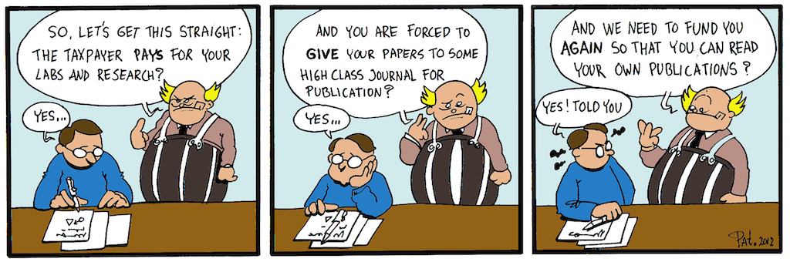
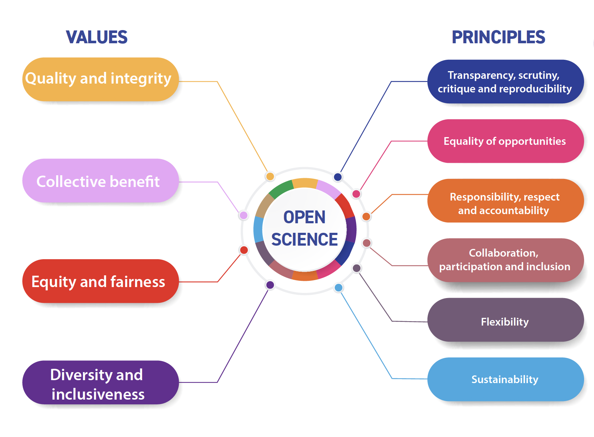
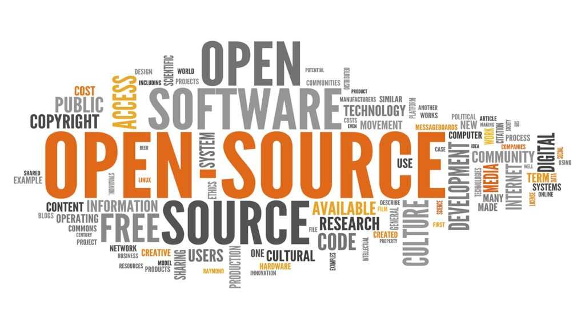

05:00
Open Science, Software, and Coding
Lewis A. Jones
UCL Staff Away Day 2025
UCL Staff Away Day 2025
Introduction
- Lewis A. Jones (he/him)
- NERC Independent Research Fellow (2024–2029)
- Palaeobiologist 🪸
- Open-Science advocate
Schedule
- 11:30–12:00: Open Science
- 12:00–12:30: Open-Source Software
- 12:30–13:00: Building Computing Literacy
Open Science
- What is Open Science?
- Core values and guiding principles
- Why does Open Science matter?
- How can we promote Open Science as a department?
- How can we integrate Open Science skills and knowledge into teaching?
What is Open Science?
What is Open Science?
Open Science is defined as an inclusive construct that combines various movements and practices aiming to make multilingual scientific knowledge openly available, accessible and reusable for everyone, to increase scientific collaborations and sharing of information for the benefits of science and society, and to open the processes of scientific knowledge creation, evaluation and communication to societal actors beyond the traditional scientific community. It comprises all scientific disciplines and aspects of scholarly practices, including basic and applied sciences, natural and social sciences and the humanities, and it builds on the following key pillars: open scientific knowledge, open science infrastructures, science communication, open engagement of societal actors and open dialogue with other knowledge systems. – UNESCO, 2021
What is Open Science?
Open Science is a movement and set of practices aimed at making scientific research more accessible, transparent, and reusable for everyone — not just for other scientists, but also for the public, educators, policymakers, and industry.
Patrick Hochstenbach, 2012
Open Science Values and Principles
Open Science Values and Principles
UNESCO (2021)
Values - Quality and Integrity
Quality and integrity: Open Science should respect academic freedom and human rights and support high-quality research by bringing together multiple sources of knowledge and making research methods and outputs widely available for rigorous review and scrutiny, and transparent evaluation processes. – UNESCO, 2021

TL;DR: Open Science upholds academic freedom and human rights while fostering high-quality research through openness, inclusivity, transparency, and rigorous peer review.
Values - Collective Benefit
Collective benefit: as a global public good, open science should belong to humanity in common and benefit humanity as a whole. To this end, scientific knowledge should be openly available and its benefits universally shared. The practice of science should be inclusive, sustainable and equitable, also in opportunities for scientific education and capacity development. – UNESCO, 2021

TL;DR: Open Science is shared, inclusive, and equitable global good benefiting all of humanity.
Values - Equity and Fairness
Equity and fairness: open science should play a significant role in ensuring equity among researchers from developed and developing countries, enabling fair and reciprocal sharing of scientific inputs and outputs and equal access to scientific knowledge to both producers and consumers of knowledge regardless of location, nationality, race, age, gender, income, socio-economic circumstances, career stage, discipline, language, religion, disability, ethnicity or migratory status, or any other grounds. – UNESCO, 2021

TL;DR: Open Science ensures equitable access and participation for all researchers, regardless of background or location.
Values - Diversity and Inclusiveness
Diversity and inclusiveness: open science should embrace a diversity of knowledge, practices, workflows, languages, research outputs and research topics that support the needs and epistemic pluralism of the scientific community as a whole, diverse research communities and scholars, as well as the wider public and knowledge holders beyond the traditional scientific community, including indigenous peoples and local communities, and social actors from different countries and regions, as appropriate. – UNESCO, 2021

TL;DR: Open Science embraces and values diverse knowledge systems, practices, and voices within and beyond the scientific community.
Principles - Transparency, Scrutiny, Critique and Reproducibility
Transparency, scrutiny, critique and reproducibility: increased openness should be promoted in all stages of the scientific endeavour, with the view to reinforcing the strength and rigour of scientific results, enhancing the societal impact of science and increasing the capacity of society as a whole to solve complex interconnected problems. Increased openness leads to increased transparency and trust in scientific information and reinforces the fundamental feature of science as a distinct form of knowledge based on evidence and tested against reality, logic and the scrutiny of scientific peers. – UNESCO, 2021
TL;DR: Open Science strengthens scientific rigor, transparency, trust, and society’s ability to address complex challenges.
Principles - Equality of Opportunities
Equality of opportunities: all scientists and other open science actors and stakeholders, regardless of location, nationality, race, age, gender, income, socio-economic circumstances, career stage, discipline, language, religion, disability, ethnicity or migratory status, or any other grounds, have an equal opportunity to access, and contribute to and benefit from open science. – UNESCO, 2021
TL;DR: Open Science ensures equal opportunity for all to access, contribute to, and benefit from scientific knowledge.
Principles - Responsibility, Respect and Accountability
Responsibility, respect and accountability: with greater openness comes greater responsibility for all open science actors, which, together with public accountability, sensitivity to conflicts of interest, vigilance as to possible social and ecological consequences of research activities, intellectual integrity and respect for ethical principles and implications pertaining to research, should form the basis for good governance of open science. – UNESCO, 2021
TL;DR: Open Science demands responsibility, integrity, and ethical accountability.
Principles - Collaboration, Participation and Inclusion
Collaboration, participation and inclusion: collaborations at all levels of the scientific process, beyond the boundaries of geography, language, generations and resources, should become the norm, and collaboration between disciplines should be promoted, together with the full and effective participation of societal actors and inclusion of knowledge from marginalized communities in solving problems of social importance. – UNESCO, 2021
TL;DR: Open Science requires inclusive, cross-disciplinary, and global collaboration to address societal challenges.
Principles - Flexibility
Flexibility: due to the diversity of science systems, actors and capacities across the world, as well as the evolving nature of supporting information and communication technologies, there is no one-size-fits-all way of practicing open science. Different pathways of transition to and practice of open science need to be encouraged while upholding the above-mentioned core values and maximizing adherence to the other principles hereby presented. – UNESCO, 2021
TL;DR: Open Science requires flexible, context-specific approaches guided by shared core values.
Principles - Sustainability
Sustainability: to be as efficient and impactful as possible, open science should build on long-term practices, services, infrastructures and funding models that ensure the equal participation of scientific producers from less privileged institutions and countries. Open science infrastructures should be organized and financed upon an essentially not-for-profit and long-term vision, which enhance open science practices and guarantee permanent and unrestricted access to all, to the largest extent possible. – UNESCO, 2021
TL;DR: Open Science requires sustainable, inclusive, and not-for-profit infrastructures ensuring equal global participation and access.
Why does Open Science matter?
Why does Open Science matter?
- Increases accessibility to scientific knowledge for all
- Enhances transparency and trust in research processes and results
- Accelerates discovery and innovation through wider data and knowledge sharing
- Findability, Accessibility, Interoperability, and Reusability data principles
- Improves research quality by enabling verification and reproducibility
- Fosters global collaboration across disciplines, regions, and cultures
- Promotes equity and inclusion by involving underrepresented communities and researchers
- Maximises societal impact by making research outcomes available for public benefit
- Encourages responsible and ethical science through openness and accountability
- Funders may require it (e.g. UKRI - NERC)
- Significance for the REF?
How can we promote Open Science as a department?
How can we promote Open Science as a department?
Points to consider:
- What are we already doing well? Do we know?
- What could we do more of?
- How would we support such actions?
How can we promote Open Science as a department?
- Publishing: Encourage publishing in open-access journals/repositories
- Share Data and Code: Make datasets, models, software, and workflows publicly available with clear metadata
- Use and Contribute to Open Infrastructures: Support community-driven resources
- Implement Open Science Training: Offer workshops on open data management, reproducibility, licensing
- Recognise and Reward Open Practices: Include open science contributions in hiring, promotion, grant evaluations
- Adopt Transparent Processes: Pre-register studies, share methods, document research
- Develop Sustainable Open Science Policies: Create departmental guidelines that support open, ethical, responsible practices
How can we integrate Open Science skills and knowledge into teaching?
How can we integrate Open Science skills and knowledge into teaching?
Points to consider:
- Should we?
- What Open Science skills and knowledge would students benefit from?
- How would we deliver those skills and knowledge?
- What does success look like?
05:00
How can we integrate Open Science skills and knowledge into teaching?
- Include Open Science Principles in the Curriculum
- Teach the values of transparency, reproducibility, and accessibility in research
- Teach Data Sharing and Management
- Promote Open Source Tools (coming next!)
- Incorporate Reproducible Research Practices
- Introduce Pre-registration and Open Peer Review
- Assign Open Publication Projects
- Encourage Citizen Science Participation
- Discuss Ethics and Equity in Open Science
- Model Open Practices as Instructors
Open-Source Software
Open-Source Software
- What is Open-Source Software?
- Why use Open-Source Software?
- What resources are available?
- Quarto, what’s that?
What is Open-Source Software?
Open-Source Software is software whose source code is made freely available for anyone to view, use, modify, and distribute (e.g. QGIS). This means that individuals or organisations can study how the software works, improve it, fix bugs, or adapt it to their needs without needing to ask for permission. This contrasts with closed-source software, where the source code is proprietary and not generally available for public use or modification (e.g. ArcGIS).
Why use Open-Source Software?
Transparency and Reproducibility
Researchers can inspect how the software works, verify and reproduce results.
Cost-Effectiveness
Avoid expensive licensing fees. Accessible regardless of budget.
Customization and Flexibility
Researchers can modify or extend the software to fit their specific needs.
Community Support and Collaboration
Communities collaborate on software development, accelerating innovation.
Longevity and Independence
Less likely to disappear if a company stops supporting it.
Encourages Open Science
Open-source software aligns with the principles of open access and open data.
What resources are available?
What resources are available?
SO MANY
Writing & Document Preparation
- LibreOffice – Full office suite (word processing, spreadsheets, presentations)
- LaTeX / TeX Live / MiKTeX – High-quality typesetting for scientific papers
- Overleaf (Community Edition) – Collaborative LaTeX editor
- LyX - Document processor that uses LaTeX but offers a user-friendly interface
- Zettlr – Markdown editor with citation support for academic writing
- Pandoc – Universal document converter
Reference & Citation Management
- Zotero – Citation manager with browser plugins and word processor integration
- JabRef – Open-source BibTeX reference manager for LaTeX users
- Docear – Academic literature management and mind-mapping tool
What resources are available?
Data Analysis & Statistics
- R / RStudio (Open Source Version) – Statistical computing and graphics
- Python (with SciPy, NumPy, pandas, Matplotlib, etc.) – General scientific computing
- JASP – User-friendly GUI for Bayesian and classical statistics
- PSPP – SPSS alternative for statistical analysis
- KNIME - Open-source data analytics, reporting, and integration platform
Drawing & Visualisation
- Inkscape – Vector graphics editor
- GIMP - Raster graphics editor
- Blender - 3D modeling, rendering, and animation software
- Plotly - Interactive plotting libraries
- Gnuplot – Command-line plotting
- Graphviz – Graph visualization
- Gephi – Network analysis and visualization
Quarto, what’s that?
Quarto, what’s that?
An open-source scientific and technical publishing system
- Author using plain text markdown
- Create dynamic content with Python, R, Julia, and Observable
- Publish reproducible, production quality articles, presentations, dashboards, websites, blogs, and books in HTML, PDF, MS Word, ePub, and more
- Write using Pandoc markdown, including equations, citations, crossrefs, figure panels, callouts, advanced layout, and more
Building Computing Literacy
Building Computing Literacy
- What is Computing Literacy?
- Why is it important?
- Is a dedicated module for teaching computational skills needed?
- What programming language(s) should we teach our students?
What is Computing Literacy?
Computing literacy refers to the ability to understand, use, and engage with computer systems, digital technologies, and computational thinking to solve problems, communicate, and create content.
- Basic Computer Skills: Knowing how to operate devices, use software applications (like word processors, browsers, spreadsheets), and manage files
- Digital Literacy: Understanding how to navigate the internet, evaluate online information critically, and use digital tools responsibly and securely
- Computational Thinking: Approaching problems in ways that can be solved by computers—such as breaking tasks into steps (algorithmic thinking), recognizing patterns, and creating simple programs or scripts
- Software Literacy: Being familiar with how software works, the logic behind applications, and sometimes even basic coding or scripting knowledge
- Data Literacy: Understanding how data is collected, processed, visualized, and used to inform decisions; awareness of Digital Ethics; knowing about privacy, security, digital rights, and responsible technology use
Why is it important for the students?
- Essential for Academic Success: Many disciplines now rely on digital tools – data analysis, simulation, modelling… Students need computing skills to write reports, analyse data, create presentations, and collaborate effectively.
- Prepares Students for Industry: Almost every profession requires some level of digital competency. Employers expect graduates to be comfortable with software, data, and digital technology.
- Encourages Problem-Solving and Critical Thinking: Fosters computational thinking—breaking down complex problems, designing solutions, and automating tasks.
- Promotes Digital Citizenship and Responsibility: Understanding data privacy, security, and ethical tech use helps students navigate the digital world.
- Supports Innovation and Creativity: Computing skills empower students to create—not just consume—technology.
- Adaptability to Technological Change: Technology evolves rapidly; students with computing literacy are better equipped to learn new tools.
Is a dedicated module for teaching computational skills needed?
Is a dedicated module for teaching computational skills needed?
Computational Skills for Earth Scientists (Introduction and/or Advanced)
Points to consider:
- Do the students need it? How would it benefit them?
- What would this module look like?
- Who could lead such a module? Could we all contribute?
- Could these skills be built up through existing modules?
- Should we actively teach the students programming?
05:00
What programming language(s) should we teach our students?
What programming language(s) should we teach our students?
Points to consider:
- Should we even teach programming?
- What do we already teach? And why?
- What is the gateway programming language?
- What resources are available to support teaching and learning?
- What will make our students competitive now, and in the future?
- Is there benefit in teaching multiple languages or developing strong skills in one?
- What can we teach with our current skill set?
05:00
How about R?
How about R?
R is Open-Source and Free
- Unlike costly proprietary software (e.g. SPSS, SAS, MATLAB), R is free and open-source
- This makes it accessible to all students, even after graduation—an important equity consideration
Encourages Reproducible Science
- R (especially with R Markdown and Quarto) fosters reproducible data analysis, a growing priority in scientific research
How about R?
Gentler learning curve
library(dplyr)
library(readr)
# Example dataset: 'students.csv'
# (Assume it has columns: Name, Age, Gender, Score, Passed)
students <- read_csv("students.csv")
clean_students <- students %>%
drop_na() %>%
filter(Age >= 18) %>%
select(Name, Age, Gender, Score) %>%
mutate(Grade = case_when(
Score >= 90 ~ "A",
Score >= 80 ~ "B",
Score >= 70 ~ "C",
TRUE ~ "D"
)) %>%
arrange(desc(Score))How about R?
Gentler learning curve
# Load necessary packages
library(dplyr)
library(readr)
# 1. Load dataset
# Example dataset: 'students.csv'
# (Assume it has columns: Name, Age, Gender, Score, Passed)
students <- read_csv("students.csv")
# 2. Clean the data using dplyr
clean_students <- students %>%
# Remove rows with any missing values
drop_na() %>%
# Filter students aged 18 or older
filter(Age >= 18) %>%
# Select only relevant columns
select(Name, Age, Gender, Score) %>%
# Create a new column 'Grade' based on Score
mutate(Grade = case_when(
Score >= 90 ~ "A",
Score >= 80 ~ "B",
Score >= 70 ~ "C",
TRUE ~ "D"
)) %>%
# Arrange the data by Score in descending order
arrange(desc(Score))How about R?
Teaches Logical and Computational Thinking
- Builds skills in problem-solving, logic, algorithmic thinking
Bridges Theory and Practice
- Apply statistical and methodological concepts learnt in class to real data
Transferable Skills
- Skills learnt transferable to other languages like Python or Julia, as well as to general digital literacy
How about R?
Widely Used in Research and Industry
- R is widely used in academia and increasingly in industry (data science, analytics)
- Learning R prepares students for both graduate research and job markets
Massive Community and Learning Resources
- R has an active community offering packages, tutorials, and forums—ideal for students to continue learning independently
Packages
Over 22,000 packages available on The Comprehensive R Archive Network
General Geoscience and Mapping
- geoscale: geological time scale plotting
- astrochron: a package for conducting, and learning about: (1) paleoclimate time series analysis, (2) astronomical time scale construction, and (3) the statistical integration of astrochronologies with other geochronologic/chronostratigraphic data.
- GEOmap: Topographic and geologic mapping
- geomapdata: Set of data for use in package GEOmap
- Globe: Plot 2D and 3D Views of the Earth
- terrainr: Landscape Visualizations in R and ‘Unity’
- terrainmeshr: Triangulate and simplify 3D terrain meshes
- RSAGA: SAGA geoprocessing and terrain analysis
- rayshader: Create Maps and Visualize Data in 2D and 3D
- earthtones: Derive a color palette from a particular location on Earth
Geostatistics
- geotoolsR: Tools to improve the use of geostatistic
- georob: Robust geostatistical analysis of spatial data
- gear: Geostatistical analysis in R
- gstat: Spatial and spatio-temporal geostatistical modeling, prediction, and simulation
- geostats: An introduction to statistics for geoscientists
Geochemistry
- rgr: Applied geochemistry exploratory data analysis
- isoplotR: Statistical toolbox for radiometric geochronology
- GCDkit: a system for handling and recalculation of whole-rock analyses from igneous rocks
- OrgMassSpecR: Organic/biological mass spectrometry data analysis
- CHNOSZ: Thermodynamic calculations and diagrams for geochemistry
- ggtern: Create ternary diagrams
- phreeqc: R Interface to Geochemical Modeling Software
Hydrology
- GWSDAT: Groundwater spatiotemporal data analysis tool
- streamDepletr: Estimate streamflow depletion due to groundwater pumping
- GlacierSMBM: Glacier surface mass balance model
Oil and Gas
- Rmbal: Estimate original hydrocarbon in place and reservoir performance
- Rpvt: Estimate the PVT properties of reservoir fluids
Structural Geology
- RockFab: Rock fabric and strain analysis tools
Palaeontology
- palaeoverse: Provides functionality to support data preparation and exploration for palaeobiological analyses
- tidypaleo: Provides a set of functions with a common framework for age-depth model management, stratigraphic visualization, and common statistical transformations
- paleobioDB: Download and process data from the paleobiology database
- fossil: Palaeoecological and palaeogeographical analysis tools
- FossilSim: Simulating taxonomy and fossil data on phylogenetic trees under mechanistic models of speciation, preservation and sampling
- strap: Stratigraphic tree analysis for paleontology
- folio: Datasets for teaching archaeology and paleontology
- chronosphere: A package to facilitate spatially explicit analyses of (paleo)environmental/ecological research
Provenance Analysis
- fingerPro: Sediment source fingerprinting
- provenance: Statistical toolbox for sedimentary provenance analysis - datasets included
- isoplotR: Statistical toolbox for radiometric geochronology
Seismicity
- ETAS: Modeling earthquake data using ‘ETAS’ model datasets included
- bayesainETAS: Bayesian estimation of the ETAS model for earthquake occurrences
- GRTo: Tools for the analysis of Gutenberg-Richter distributions of earthquake magnitudes
- TauP.R: Earthquake traveltime calculations for 1D earth models - datasets included
Stratigraphy
- stratigrapheR - Integrated stratigraphy tools for plotting stratigraphic data
- SDAR - A tool for plotting and facilitating the analysis of stratigraphic and sedimentological data
- coreCT - Programmatic analysis of sediment cores using computed tomography imaging
- G2sd - Grain-size statistics and description of sediment
- EMMAgeo - End-member modeling of grain-size data
- DecomposeR - Empirical model decomposition for cyclostratigraphy
(Palaeo-)Climate
- climate: Automatize downloading of meteorological and hydrological data from publicly available repositories
- climatol: an R package holding functions for quality control, homogenization and missing data in-filling of climatological series
- rpaleoclim: high resolution paleoclimate surfaces covering the whole globe
- pastclim: an R package to easily access and use paleoclimatic reconstructions
- climetrics: an R package to quantify multiple dimensions of climate change
- geodata: Functions for downloading of geographic data for use in spatial analysis and mapping
- stagg: A data pre-processing R package for climate impacts analysis
Remote Sensing and Spatial Analysis
- RStoolbox: Toolbox for remote sensing image processing and analysis
- sf: Support for simple feature access, a standardized way to encode and analyze spatial vector data
- terra: Methods for spatial data analysis with vector (points, lines, polygons) and raster (grid) data
- stars: Reading, manipulating, writing and plotting spatiotemporal arrays
Community Resources
CRAN Task Views
| ActuarialScience | Actuarial Science |
| Agriculture | Agricultural Science |
| Bayesian | Bayesian Inference |
| CausalInference | Causal Inference |
| ChemPhys | Chemometrics and Computational Physics |
| Cluster | Cluster Analysis & Finite Mixture Models |
| CompositionalData | Compositional Data Analysis |
| Databases | Databases with R |
| DifferentialEquations | Differential Equations |
| Distributions | Probability Distributions |
| DynamicVisualizations | Dynamic Visualizations and Interactive Graphics |
CRAN Task Views
| Environmetrics | Analysis of Ecological and Environmental Data |
| ExperimentalDesign | Design of Experiments (DoE) & Analysis of Experimental Data |
| ExtremeValue | Extreme Value Analysis |
| FunctionalData | Functional Data Analysis |
| GraphicalModels | Graphical Models |
| HighPerformanceComputing | High-Performance and Parallel Computing with R |
| Hydrology | Hydrological Data and Modeling |
| MachineLearning | Machine Learning & Statistical Learning |
| MetaAnalysis | Meta-Analysis |
| MissingData | Missing Data |
CRAN Task Views
| MixedModels | Mixed, Multilevel, and Hierarchical Models in R |
| ModelDeployment | Model Deployment with R |
| NaturalLanguageProcessing | Natural Language Processing |
| NetworkAnalysis | Network Analysis |
| NumericalMathematics | Numerical Mathematics |
| OfficialStatistics | Official Statistics & Survey Statistics |
| Omics | Genomics, Proteomics, Metabolomics, Transcriptomics, and Other Omics |
| Optimization | Optimization and Mathematical Programming |
CRAN Task Views
| Paleontology | Paleontology |
| Phylogenetics | Phylogenetics |
| ReproducibleResearch | Reproducible Research |
| Robust | Robust Statistical Methods |
| Spatial | Analysis of Spatial Data |
| SpatioTemporal | Handling and Analyzing Spatio-Temporal Data |
| Survival | Survival Analysis |
| TeachingStatistics | Teaching Statistics |
| TimeSeries | Time Series Analysis |
| Tracking | Processing and Analysis of Tracking Data |
| WebTechnologies | Web Technologies and Services |
Books
Where do we go from here?
Where do we go from here?
- Moving forward
- Develop a ‘Departmental Ethos on Open Science’?
- Standardise the tools we teach?
- Survey
https://lewisajones.github.io/UCL-Staff-Away-Day